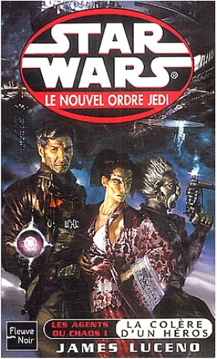

peter pan, tome 4 : mains rougesrégis loisel peter pan, tome 4 : mains rougesrégis loisel  Mais si ! Peter Pan a existé ! À Poulbot de White Chapell, le quartier de Londres le plus populeux en cette année 1887, il survit vaille que vaille dans un monde d'adultes corrompus par la misère. Un soir d'hiver, la fée Clochette vient l'arracher à sa mère ivrogne et aux appétits glauques des clochards privés d'amour. Peter Pan découvre alors le monde féerique imaginé par sir James James Barrie. Enfin, féerique, pas tant que ça. On y meurt aussi...  peter pan, tome 5 : crochetrégis loisel peter pan, tome 5 : crochetrégis loisel C'est l'événement BD de l'année 2002 : le cinquième volet de la saga de Peter Pan. Avant-dernier de la série, Crochet voit s'affronter Peter et l'affreux capitaine manchot. Celui-ci est bien décidé à se débarrasser de ce gamin insolent. Justement, l'un de ses marins vient de lui bricoler un superbe crochet serti de diamants étincelants... De quoi savourer une vengeance remâchée depuis belle lurette. Seulement voilà : Crochet n'a pas que Peter pour ennemi. Un certain crocodile reconnaissable à son bruit de réveil lancinant s'attache à ses pas et le poursuit jusque dans ses rêves. Tic-tac, tic-tac… Pauvre Crochet ! Lui qui fait trembler d'effroi ses meilleurs marins se laisse glacer par une terreur insurmontable dès que le crocodile pointe ses dents et ses yeux globuleux. Le second du navire, Mouche, décide alors d'inventer un leurre à l'effigie de son capitaine. Mais le cruel croco n'est pas du genre à lâcher prise facilement… Peter, de son côté, s'offre un petit voyage à Londres chez son cher Mr Kundal. Bien mal en point, le vieux bonhomme lui remet un trésor original : une lettre cachetée. À l'intérieur, une photographie de femme… star wars, tome 45 : le nouvel ordre jedi, partie 3, les agents du chaos, partie 1, la colère d'un hérosjames luceno |


 Made with Delicious Library
Made with Delicious LibraryNancy, State zipflap congrotus delicious library Thomas, Julien